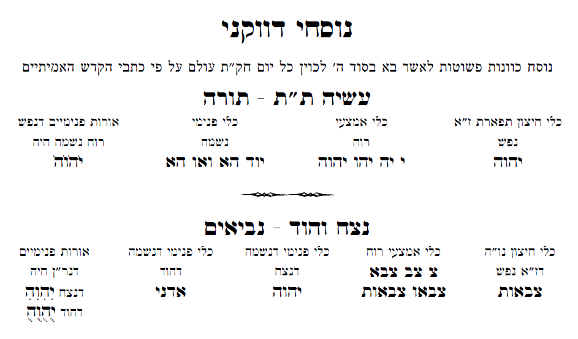

ול- J. Alan Groves Center - תחת תנאי רשיון CC-2.5
הקדמות
הקדמת מהרח''ו
הקדמת החיד''א
מעשה רוקח
הקדמת מהרח''ו
זה לשון הרב המקובל הגדול מהרח''ו זללה''ה
סדר עסק התורה שהאדם חייב לקרוא בכל יום בקביעות בסוד קבעת עתים לתורה: זה היה מנהג מורי זלה''ה. בצאתו מבית הכנסת היה עדיין מעוטף בציצית ותפילין, וקורא הסדר הזה בכוונות האלו על פי סדר המדריגות ממטה למעלה: וזה הסדר, תנ''ך משנה תלמוד וקבלה:
וזה פרטן, יום ראשון מהשבוע היה קורא מתחילת פרשת השבוע ששה פסוקים שנים מקרא ואחד תרגום, ואחר כך נביאים ג''כ עם התרגום ואחר כך כתובים ג''כ עם התרגום. ואין צריך לקרוא שנים מקרא אלא בתורה לבד, אבל נביאים וכתובים פעם אחת מקרא ופעם אחת תרגום. והכל הוא בעולם העשיה. ושם הוי''ה דשם ב''ן במילוי כזה, יוד הה וו הה. נמצא שאותיות המילוי הם חמשה וֵדֲהֶוָהִ. והם נחלקים בחמשה ימי השבוע מיום א' עד יום ה', אות אחת בכל יום מתורה או נביאים או כתובים. ונקודות או אותיות אלו הם ציר''י שב''א פת''ח סגו''ל קמ''ץ חירי''ק, והם יוצאים מן חמשה נקודים של אֵת אֲשֶר יָבִיאו. ולכן צריך לקרוא בכל יום ראשון ששה פסוקים מתחילת הפרשה וכן מנביאים וכתובים, וביום השני ארבעה פסוקים שאחריהם, וביום ג' חמשה פסוקים שאחריהם, וביום ד' ששה פסוקים שאחריהם, וביום ה' חמשה פסוקים שאחריהם, נמצא שקרא בחמשה ימי שבוע כ''ו פסוקים:
וכשקורא בתורה צריך לכוין שהיא בתפארת דזעיר דעשיה. ולכן צריך לכוין בשלוש שמות של שלוש בחינות של כלי העשיה, שהם (יהו''ה) כלי החיצון דנפש. (י יה יהו יהו''ה) כלי אמצעי דרוח. (יוד הא ואו הא) כלי פנימי דנשמה. וגם יֹהֹוֹהֹ בניקוד חול''ם, שהיא בחינת חיה יחידה לשלש בחינות אלו:
וכשקורא נביאים יכוין שהם בנצח הוד דעשיה. ויכוין בשלושה שמות של שלש בחינות כליהם, שהם (צבאות) כלי חיצון דנפש. (צ צב צבא צבאו צבאות) כלי אמצעי דרוח. (יהו''ה) כלי פנימי דנשמה דנצח. (אדני) כלי פנימי דנשמה דהוד. וגם שני יהו''הִ יהו''הֻ, אחד בחיר''ק ואחד קבוץ, שהם בחינת חיה יחידה לשלש בחינות אלו:
וכשקורא כתובים יכוין שהם ביסוד דזעיר דעשיה ובמלכות. ויכוין בשלשה שמות של ג' בחינות כליהם, שהם (שין דלת יוד) כלי חיצון דנפש. (שין שין דלת שין דלת יוד) כלי אמצעי דרוח. (יאהדונהי) כלי פנימי דנשמה דיסוד. (אלף דלת אלף יוד) כלי פנימי דנשמה דמלכות. וגם שם יו הו וו הו חיה יחידה דיסוד. (יהו''ה) חיה יחידה דמלכות:
וכשקורא משנה יכוין שהיא בששה קצוות דנוקבא דיצירה. לכן אם הוא בסדר זרעים, יכוין לגבורה שלה, שהוא ב' פעמים (אלף למד אלף למד). ואם בסדר מועד, יכוין לגבורה שלה, שם אלהים. ואם בסדר נשים, יכוין שהוא בתפארת שלה, שהוא שם (צבאות). ואם הוא בסדר נזיקין, יכוין שהוא בנצח שלה, שהוא שם (א אל). ואם הוא בסדר קדשים, יכוין שהוא בהוד שלה, שהוא (א אל אלה אלהי אלהים). ואם הוא בסדר טהרות, יכוין שהוא ביסוד שלה, שהוא שם (שדי):
וכשיקרא תלמוד יכוין שהוא בנוקבא דז''א דבריאה שהוא ה' כלה. ואם הוא בזרעים הוא בחסד שלה, שהוא שם (אלף למד). וסדר מועד הוא בגבורה, וה' הוא (אכדטם). וסדר נשים הוא בתפארת. וה' הוא (השתפא). סדר נזיקין הוא בנצח, וה' הוא (בם). וסדר קדשים הוא בהוד, והשם הוא (במוכן). וסדר טהרות הוא ביסוד, וה' הוא (ש שד שדי):
וכשילמוד קבלה יכוין שהוא בתפארת דאצילות, והשם הוא (יוד הא ואו הא). ובליל ו' בקומו באשמורת, או קודם שישן אם לא יוכל לקום באשמורת, יקרא כ''ו פסוקים מהפרשה, אותם שהם אחר הכ''ו שקרא בחמשה ימי השבוע. ויקראם שנים מקרא ואחד תרגום. ויכוין בצרוף אחד מי''ב צירופי (יהו''ה) שהוא וִהִיִהִ כולו בניקוד חירי''ק, והוא ניקוד אות שניה של תיבת הששי:
כוונת קריאת הפרשה ביום ששי שמו''ת תכוין כן. ש''מ משמו''ת הוא תפארת ויסוד, שהם מקרא. ו''ת הוא תרגום, שהוא מלכות. ותכוין במילוי שם ב''ן כזה וּ וּד הוּ וּ הוּ בניקוד שורו''ק. והוא ניקוד אוּ של יביאו, וג' ו''וין שניתוספו בג' אותיות (דהה הם בגי' ח''י), שיום ששי שהוא יסוד הנקרא חי העולמים הנותן חיים אל המלכות שבת, כי יום ששי מכין לשבת שהוא מלכות. ותחזור לחבר חמש אותיות המילוי שם ב''ן שהיו מחולקים בה' ימי השבוע, תכללם יחד כזה וּ דוּ הוּ וּ הוּ בניקוד שורו''ק. גם תכוין לעשות מהם שם (יהו''ה) כזה והיה בניקוד בַּיּוֹם הַשִּׁשִּׁי. וזה תכוין במקרא בפעם ראשונה ובשניה למילוי שם ב''ן כזה וּ דוּ הוּ וּ הוּ. ובתרגום לאחוריים, שהוא שם ע''ב, שיש בכל הט' ספירות מכתר עד היסוד שעולים תרגום שנותנים אל המלכות. גם תכוין לאחורים של שם ב''ן כזה וּ וּ דוּ וּ דוּ הוּ וּ דוּ דוּ וּ וּ דוּ הוּ וּ הוּ:
כוונת שמיעת הפרשה ביום שבת מהש''צ. תכוין בהויה דבן ט' אותיות כזה יִוְדֶ הַהֲ וָוִ הֻהֻ, בניקוד מִשְּׁנֶה עַל אֲשֶּׁר יִלְקְטוּ. גם תכוין לב' שמות וּ הוּ יוּ הוּ וּ הוּ יוּ הוּ בניקוד ט' של ילקטו. וזה והיה משנה, רוצה לומר ב' פעמים והיה. וצריך לשמוע כל הפרשה מפי הש''ץ. אבל ההפטרה צריך לאומרה בפיו ולא יסמוך על הש''ץ:
תפלה לאומרה קודם קריאת התורה
לשם יחוד קודשא בריך הוא ושכינתיה בדחילו ורחימו, ליחדא שם י''ה בו''ה ביחודא שלים בשם כל ישראל, ולאקמא שכינתא מעפרא. הריני קורא בתורה שהיא כנגד תפארת דזעיר אנפין, שבו שלשה כלים דשלש בחינות נפש רוח נשמה. יהו''ה, כלי החצון דנפש. י' י''ה יה''ו יהו''ה, כלי אמצעי דרוח. יו''ד ה''א וא''ו ה''א, כלי פנימי דנשמה. ובחינת אורות מקיפים שהם יחידה חיה יֹהֹוֹ''הֹ בנקודת חול''ם, לעשות לה מרכבה. ויהי רצון מלפניך ה' אלהי ואלהי אבותי, שתזכך את רוחי ונפשי שיהיו ראוים לעורר מיין תתאין על ידי קריאת התורה הזאת. ואל יעכב שום חטא ועון והרהור רע את קראית התורה הזאת. ויהי נועם אדני אלהינו עלינו ומעשה ידינו כוננה עלינו ומעשה ידינו כוננהו. ברוך ה' לעולם אמן ואמן:
יכוין אחר כך ביחודים הנאמרים בשערי ציון בשער ד' מידי יום ביומו ולא יוציא שום שם מפיו רק יכוין כנ''ל:
תפלה לאומרה קודם קריאת נביאים
לשם יחוד קודשא בריך הוא ושכינתיה בדחילו ורחימו, ליחדא שם י''ה בו''ה ביחודא שלים בשם כל ישראל, ולאקמא שכינתא מעפרא. הריני קורא בנביאים שהוא כנגד נצח הוד דזעיר אנפין שבהם שלשה כלים של שלש בחינות נפש רוח נשמה. צבאות, כלי חיצון דנפש. צ' צ''ב צב''א צבא''ו צבאו''ת, כלי אמצעי דרוח. יהו''ה, כלי פנימי של נצח. אדנ''י, כלי פנימי של הוד. בחינת נשמה בבחינת אורות מקיפים, שהם יחידה חיה, של נצח יהו''הִ ושל הוד יהו''הֻ נקוד חירי''ק וקובו''ץ, לעשות לו מרכבה. ויהי רצון מלפניך ה' אלהי ואלהי אבותי, שתזכך את רוחי ונפשי ונשמתי לעורר מיין תתאין על ידי קריאת הנביאים הזאת. ואל יעכב שום חטא ועון והרהור רע את קריאת הנביאים הזאת. ויהי נועם אדני אלהינו עלינו ומעשה ידינו כוננה עלינו ומעשה ידינו כוננהו. ברוך ה' לעולם אמן ואמן:
תפלה לאומרה קודם קריאת כתובים
לשם יחוד קודשא בריך הוא ושכינתיה בדחילו ורחימו, ליחדא שם י''ה בו''ה ביחודא שלים בשם כל ישראל, ולאקמא שכינתא מעפרא. הריני קורא בכתובים שהוא כנגד יסוד דזעיר ומלכות נוקבא דזעיר, שהם שלשה שמות בבחינת שלשה כלים נפש רוח נשמה. שי''ן דל''ת יו''ד, כלי חיצון דנפש. שי''ן שי''ן דל''ת שי''ן דל''ת יו''ד, כלי אמצעי דרוח. יאהדונה''י, כלי פנימי דנשמה. אל''ף דל''ת נו''ן יו''ד, כלי החיצון דמלכות דנוקבא דזעיר, ובבחינת אורות מקיפין, י''ו ה''ו ו''ו ה''ו, חיה יחידה דיסוד דזעיר אנפין. יהו''ה, חיה יחידה של מלכות נוקבא דזעיר אנפין, ולעשות מרכבה להם. ויהי רצון מלפניך ה' אלהי ואלהי אבותי, שתזכך את רוחי ונפשי שיהיו ראויים לעורר לעורר מיין נוקבין על ידי קריאת הכתובים הללו. ואל יעכב שום חטא ועון והרהור רע את קריאת הכתובים הללו. ויהי נועם אדני אלהינו עלינו ומעשה ידינו כוננה עלינו ומעשה ידינו כוננהו. ברוך ה' לעולם אמן ואמן:
תפלה לאומרה קודם לימוד משנה
לשם יחוד קודשא בריך הוא ושכינתיה בדחילו ורחימו, ליחדא שם י''ה בו''ה ביחודא שלים בשם כל ישראל, ולאקמא שכינתא מעפרא. הריני קורא משנה שהוא סוד מטטרו''ן שביצירה, שהוא אותיות משה, ומשה עולה א''ל שד''י, והם גימטריא רצו''ן, ושהוא קפ''ד קס''א כזה, יו''ד, יו''ד ה''י, יו''ד ה''י וי''ו, יו''ד ה''י וי''ו ה''י, אל''ף ה''י יו''ד ה''י, יסוד אבא גו יסוד אמא להוריד שפע מאבא ואמא מבריאה ליצירה, ותכולל יצירה בבריאה והיא תרד מבריאה ליצירה, שלשה שמות אהי''ה כזה, אל''ף ה''י יו''ד ה''י אל''ף ה''ה יו''ד ה''ה אל''ף ה''א יו''ד ה''א, שהם ה' יודי''ן שהם סוד חמשים שערי בינה הנקראת משנה, שהם י''ה אדנ''י מטטרון.
(כשהוא לומד בסדר זרעים יאמר כך) והריני בסדר זרעים בחסד דנוקבא דזעיר שבו שני פעמים א''ל במלואו כזה, אל''ף למ''ד אל''ף למ''ד:
(וכשהוא לומד בסדר מועד יאמר כך) והריני בסדר מועד שהוא בגבורה דנוקבא דזעיר שבו שם אלהים.
(וכשהוא לומד בסדר נשים יאמר כך) והריני בסדר נשים שהוא בתפארת דנוקבא דזעיר שבו שם צבאות.
(וכשהוא לומד בסדר נזיקין יאמר כך) והריני בסדר נזיקין שהוא בנצח דנוקבא דזעיר שבו שם א' א''ל.
(וכשהוא לומד בסדר קדשים יאמר כך) והריני בסדר קדשים שהוא בהוד דנוקבא דזעיר שבו שם א' א''ל אל''ה אלה''י אלהים.
(וכשהוא לומד בסדר טהרות יאמר כך) והריני בסדר טהרות שהוא ביסוד דנוקבא דזעיר שבו שם שד''י.
להעשות לה מרכבה. ויהי רצון מלפניך ה' אלהי ואלהי אבותי, שתזכך את רוחי ונפשי שיהיו ראוים לעורר מיין נוקבין על ידי קריאת המשנה הזאת. ויהי רצון מלפניך ה' אלהי ואלהי אבותי, שאזכה לבחינת נשמה דבריאה אותיות משנה, ואל יעכב שום חטא ועון והרהור רע את קריאת המשנה הזאת. ויהי נועם וגו':
תפלה לאומרה קודם לימוד הלכה
לשם יחוד קודשא בריך הוא ושכינתיה בדחילו ורחימו, ליחדא שם י''ה בו''ה ביחודא שלים בשם כל ישראל, ולאקמא שכינתא מעפרא. הריני לומד הלכה שהוא אותיות הכל''ה, לקשט שם אדנ''י שהיא הכלה העליונה בעשרים וארבע קשוטי כלה, כדי לחברה בבעלה.
(וכשהוא לומד הלכה בסדר זרעים יאמר כך) והריני קורא בסדר זרעים שהוא בחסד דנוקבא דזעיר אנפין, שבו שם א''ל במלאו אל''ף למ''ד:
(וכשהוא לומד הלכה בסדר מועד יאמר כך) והריני קורא בסדר מועד שהוא בגבורה דנוקבא דזעיר אנפין, שבו שם אכדט''ם
(וכשהוא לומד הלכה בסדר נשים יאמר כך) והריני בסדר נשים שהוא בתפארת דנוקבא דזעיר אנפין, שבו שם השתפ''א
(וכשהוא לומד הלכה בסדר נזיקין יאמר כך) והריני בסדר נזיקין שהוא בנצח דנוקבא דזעיר אנפין, שבו שם ב''ם
(וכשהוא לומד הלכה בסדר קדשים יאמר כך) והריני בסדר קדשים שהוא בהוד דנוקבא דזעיר אנפין, שבו שם ש' ש''ד שד''י
(וכשהוא לומד הלכה בסדר טהרות יאמר כך) והריני בסדר טהרות שהוא ביסוד דנוקבא דזעיר אנפין, שבו שם במוכ''ן
להעשות לה מרכבה. ויהי רצון מלפניך ה' אלהי ואלהי אבותי, שתזכך את רוחי ונפשי שיהיו ראוים לעורר מיין תתאין על ידי קריאת הלכה הזאת. ואל יעכב שום חטא ועון והרהור רע את לימוד הלכה הזאת. ויהי נועם אדני אלהינו עלינו ומעשה ידינו כוננה עלינו ומעשה ידינו כוננהו. ברוך ה' לעולם אמן ואמן:
עוד יחוד א' להלכה יכוין בשם י''ה בצירוף א''ב כזה:
אְיָה בְיָה גְיָה דְיָה הְיָה וְיָה זְיָה חְיָה טְיָה יְיָה כְיָה לְיָה מְיָה נְיָה סְיָה עְיָה פְיָה צְיָה קְיָה רְיָה שְיָה תְיָה
תפלה לאומרה קודם לימוד קבלה
לשם יחוד קודשא בריך הוא ושכינתיה בדחילו ורחימו, ליחדא שם י''ה בו''ה ביחודא שלים בשם כל ישראל, ולאקמא שכינתא מעפרא. הריני לומד בספר קבלה פלוני שהוא כנגד תפארת דזעיר אנפין דעולם האצילות, שבו שם מ''ה כזה, יו''ד ה''א וא''ו ה''א, לעשות לו מרכבה. ויהי רצון מלפניך ה' אלהי ואלהי אבותי, שתזכך את רוחי ונפשי שיהיו ראוים לעורר מיין תתאין על ידי קריאת ספר הקבלה הזה. ויהי נועם אדני אלהינו עלינו ומעשה ידינו כוננה עלינו ומעשה ידינו כוננהו. ברוך ה' לעולם אמן ואמן:
נוסחי דווקני

יסוד מלכות כתובים

הקדמת החיד''א
זו היא ההקדמה שעשה על הספר הזה בהיותו בחיים חיותו הרב המופלא בוצינא קדישא מרנא ורבנא כמוהר''ר חיד''א זלה''ה זיע''א
ארש חיים
מילי מילי קטני סדרי ברורין. להודיע לבני האם מאימתי קורין:
אידלי יומא כי האידנא, וישמה לחק, כחקה הועלה האי ספרא רבא עלה בקב''ץ ויעשה כמשפט דינא יתיב וספרין. אשרי שיאחז והיתה עמו, וקא בו, וכמו רגע אתי עשה דהשלמה מקרא, משנה, תלמוד וקבלה כהלכת גוברין. מתן ארבע במתן אחד באחד יגשו וכמעט חיובא רמיא אקרקפתא דגברי אחד חכם ואחד תם קורין ומקרין. וכל כי האי ליתנהו בזכירה אצל עין רוגל בפרק כתבי הקדש דידעי רבנן ובקיאי מה נורא הלמוד הזה לרבות כל אשורי'ן. והיו הדברים להמון העם אליכם אישים, ואקרא הלא תדעו מה עצמו ראשי הלמוד הזה בעולמות העליונים, ומן הברכה העליונה יצא שפע נפיק מעייני מעינות מתגברין. טובי לדזכי לשמע בקול מורים חק נתן ולא יעבר הנה שכרו בשבח שקבצו עליונים למעלה, הוא פרת שמימיו פרין. איכו השתא קול הקריה לכל מסורה, זאת היתה לי הרימותי ידי בשורת דרך אר''ש יתן אומר להמון קריה אם אינם מכירין:
א. דא תהא למיקם כי הכונות שנדפסו מדי יום יום זאת לפנים על ספר חקה טעו במדבר, ואעיקרא הכונות ההם לא צדקו יחדיו כפי כתבי הקדש האמתיים דשכיחי בארץ מצרים ובהר הקדש בירושלים ת''ו, כתובים באצבע הרב מורנו הרב שמואל ויטאל זלה''ה והדברים עתיקים מטהרת יד הקדש מר אביו מורנו הרב חיים ויטאל זצ''ל. ולכן כשנדפס הספר הלז בויניציאה שם נמצאתי אנכי איש צעיר ומסרתי ביד מעלת הגביר המדפיס אהובנו יצ''ו נסח הכונות ככל הנמצא אתי, שהבאתי מעיר הקדש ירושלים ת''ו, ומעלת הגביר יקירנו המדפיס הנזכר, הדפיסם בסוף הדף בפני עצמו בשם נסחי דוקני ה'ן מפטירין:
ב. יען כי הספר הקדוש הלז מסור לכל, ואלו הכונות לא יתכנו להמון העם, וגם למי שאין לו התחלה בחכמת האמת. לכן בספר הזה השמטו הכונות אשר נכתבו בכל יום, דלאו כל מוחא סביל דא, ומה גם כי לא יבצר מחמת הדפסתם בכל יום טעיות הדפוס ואלו דברים העומדים ברומו של עולם. ונדפסו דף אחד בתחלת כל חומש כפי הנסחי דוקני הנזכר, ואשר לו יד ושם בסוד ה', נקל להם לחזות בנעם ולכן בכל יום. ובדף הזה עיניהם ישיתו לעשות כונים למלאכת שמים הוו זהירין:
ג. בכל יום צריך קרא מקרא פסוקי תורה שני פעמים ואחד תרגום. ופסוקי נביאים וכתובים פעם אחד מקרא ופעם אחד תרגום, יושבים וקורין:
ד. אור הששי, היותר נראה שלא לקרות כ''ו פסוקי תורה, כי אם שני פעמים מקרא ותו לא, ואין לקרות תרגום. ולכן לא נדפס באור הששי מקרא ותרגום ככל הימים, רק התרגום הוצב לבדו למאן דיצבי להחזיק במנהג קדום. ועיין מה שכתבנו בעניותנו בספרי הקטן מחזיק ברכה אורח חיים (סימן קנו) ובקונטרס אחרון שם ואלו נאמרין:
ה. התפלות שנדפסו בכל יום בראש הספר בדפוסים הקודמים, המסתכל יפה יבין שאין לאומרם, כי קריאת תנ''ך זו המסודרת בספר הזה אין הפסוקים מבחינת המדות ולא נתנו דבריהם לשעורין:
ו. בחול המועד טוב לקרות דבר יום ביומו ולהשלים בעד יום טוב, כי כן דבר המלך מורנו הרב חיים ויטאל זצ''ל למי שלא למד הסדר יום אחד, שצריך להשלים כשיקרא, פסוקי יום שעבר לא נצרכה אלא עולו'ת מספר מלוי שם ב''ן, וככה יעשה בחול המועד שמעתי שמחמירין:
ז. בשבוע שקורין שתי פרשיות בשבת קדש, יקרא הסדר של פרשה ראשונה לבד ראשית ששיריה נכרין:
ח. וכשחל יום טוב בשבת קדש קורין פרשה של יום טוב או של שבת וחול המועד, תמיד יקרא בשבוע סדר הפרשה שקורין במנחת שבת קדש, ואפילו שתי שבועות או שלשה חזור חזור בפרשה ההיא הרי אלו מחזירין:
ט. תוספת טובה נעשה בפעם הזו כי ביום הששי נדפס משנה וגמרא מסדר טהרות, ויהי בשלם עד היסוד בא, וגם מאמר קצר מהזוהר כאשר עיניך תחזינה והן מטהרין:
י. בדפוסים שקדמו בענין המשניות והגמרא יש חסיר חליף יתיר וכן במאמרי הזוהר הקדוש וגם ערב רב עלה אתם. איכו השתא הכל מתוקן כולם נסקרין:
יא. גם נדפס זאת לפנים בספר הזה בראשית מאמר אמרי קדוש מורנו הרב חיים ויטאל זצ''ל, והלשון ההוא לא סליק שפיר, כתיב בגויה איזה דברים שישתנו לפי הכתבים אמתיים, אי לזאת הושמט. וכי תאוה נפשך לדעת דברים בשרשן פוק עיין בשער המצוות שסדר הרב מורנו הרב שמואל ויטאל פרשת עקב, ובשעה השמות בספר אוצרות חיים ובספר עץ חיים וכיוצא בהם, ומשם בארה זקוקין דנורא ובעורין:
יב. עוד הוסיפו מעלת המגיהים שמורים לכל בני ישראל מאמרי גמרא וזוהר איפה הם רועים, הגיעו לפרקן בעלים מרדפין כאשר היתה באמנה. ועוד זאת יתירה היד כותבת דמיתבא דעתא מילתא חדתא:
יוסף לחוק מוסר מלכים והלכה פסוקה יום ליום יביע דברים המחוורין. ואשר סדרתי אני בעניי, ברם עיקר שרשוהי בקונטרס סנסן ליאיר לזכות את הרבים, יחקקו צדק לא ימושו החוקים האלה, באלו אמרו מקדימין ולא מאחרין. וצור ישראל יצילנו משגיאות ויראנו מתורתו נפלאות. ובא לציון גואל והבית בהבנותו שם יזבחו זבחי צדק דכרין ואמרין. כן יהי רצון: הלא זה דברי איש צעיר מעפר דל קטונתי איני כדאי
חיים יוסף דוד אזולאי ס''ט
מעשה רוקח
א. מודעת זאת בחיוב תלמוד תורה וכמו שכתב הטור ומרן ולבוש ביורה דעה (בסימן רמ''ו) והרמב''ם (בפרק א) מהלכות תלמוד תורה, וזה לשונו, כל איש ישראל חייב בתלמוד תורה, בין עני בין עשיר, בין שלם בגופו בין בעל יסורין, בין בחור בין זקן גדול, ואפילו עני המחזר על הפתחים, אפילו בעל אשה ובנים חייב לקבוע לו זמן ללמוד תורה ביום ובלילה, שנאמר והגית בו יומם ולילה וגו'. וחייב לשלש למודו שליש בתורה שבכתב בכלל זה. שליש בתלמוד וכו'. כיצד, היה בעל אומנות ועוסק במלאכתו שלשה שעות ביום ותשעה שעות בתורה, קורא שלושה מהם בתורה שבכתב, ובשלושה תורה שבעל פה, ובשלושה יבין דבר מתוך דבר יעו''ש. וגם באורח חיים (סימן קנ''ה) בטור ומרן ולבוש שכתבו אחר שיצא מבית הכנסת ילך לבית המדרש ויקבע עת ללמוד, וצריך שאותו עת יהיה קבוע שלא יעברנו אף אם הו סבור להרויח הרבה יעו''ש: ומאחר שכן שחייב כל איש לעסוק בתשעה שעות ביום בתלמוד תורה, אם כן מה יענה האדם ביום הדין לפני מלך מלכי המלכים הקב''ה, שכל היום כולו עוסק במלאתו איש איש על עבודתו ואינו עוסק בתורתו, כי בודאי אין קץ לעונשו. ואם ראה תראה מאמר משלי רבתא אשר הבאתי בקונטרס מיני מרקחת אשר בסוף ספר הנחמד מעשה רוקח (חלק ג') של מר זקני זיע''א, דשם בפרק שלישי הבאתי כל המאמר באורך, ועיניך תחזינה מישרים שכל הקורא בהם תסמר שערת בשרו, ולא יאכל ולא ישתה בראותו שכל מה שקרא לא נחשב לו לכלום, שצריך לקרות כל מה שכתוב שם, וה' הטוב יכפר בעד:
הנה כי כן מצוה על כל איש אשר בשם ישראל יכונה, לקנות לו ספר חוק לישראל לקרות בו בכל יום, שהוא סדר נאה ויאה שתקן לנו הרב הקדוש התנא האלהי האר''י זלה''ה זצ''ל, אשר בקריאתו זוכה במעט קט בשלושה למודים, שליש במקרא תורה נביאים וכתובים, שליש במשנה שקורא פרק מהמשנה, שליש בגמרא שקורא פסקא מהגמרא, ונוסף גם מאמר מזוהר הקדוש. ושמעתי רמז נאה כי בקריאת חוק לישראל שם רמוז תרי''ג, כי תנ''ך משנה גמרא קבלה שהוא הזוהר ראשי תיבות שלהם גמטריא תרי''ג, וגימטריא בתורה:
ומעתה הגם שאין ידו של אדם משגת לשלש תלמודו בתשעה שעות ביום, מטרדת מלאכתו לפרנס אשתו ובניו ואת עצמו, לכן יאחז צדיק ספר הלז לעסוק אהב בכל יום, דנחשב לו דבר מה בקיום חיוב זה לשלש תלמודו. והן אמת שעתה רוב המוני העם המשכילים ונבונים וגם מהתלמידי חכמים, אחר גמר תפלה מתאספים בבית הכנסת בטלית ותפילין, וקורים סדר זה בכל יום ויום, אשריהם ואשרי חלקם. ואנחנו רואים שבזמן מועט הוא משלים סדר זה, וכמו שכתב הרב הגדול חיד''א בספריו הלא המה מורה באצבע (בס''ג אות צג) ובמחזיק ברכה (סימן קנו אות ג) שצריך אחר תפילה שישתדל ללמוד סדר היום בספר חוק לישראל, כי הוא סדר נאה דרך קצרה וכשרה, וזוכה במעט זמן בעשירית שעה לקרות תנ''ך ולשנות משנה וגמרא וזוהר. והאיש הירא חוק נתן ולא יעבור, כי הוא תועלת עצום לנפשו, קרית נאמנה הזאת נעמי. וגם ילמד תנ''ך בתרגום כמו שכתב האר''י זצ''ל וכו'. גם לא יאמר התפלות שבראש הספר יעו''ש:
גם אחריו החזיק בשבח קריאה זו הרב החסיד חסד לאלפים ז''ל (סימן קנ''ה) וז''ל אחר שיצא מבית הכנסת וכו' והן עתה נתפשט למוד סדר חוק לישראל וכו', ומה טוב שהתלמיד חכם או יודע ספר שבעיר יקרא אותו בקול רם במתון, ואליו יאספו כל יראי ה' וחושבי שמו, וילמדו אחריו ויפרש להם הגמרא והזוהר והתוכחת מוסר והיוסף לחוק, באופן שכל הרוצה יוכל לזכות בו, אפילו היותר עם הארץ וכו' יעו''ש. ועיין גם הרב דבש לפי ז''ל (מערכת תק אות מא) ע''ש. וסדר קריאת הפסוקים של הסדר הזה, הנה הנם בשער המצוות פרשת ואתחנן ונגיד ומצוה (דף טל) וארחות צדיקים (דף צג) ולחם מן השמים למהרי''ן ז''ל כתיבת יד ומשם בארה:
ב. אם לא קרא מקרא ביום א' של השבוע, יש לו תשלומין שיקרא ביום ב' שתי הקריאות, דהיינו קריאת יום ראשון ויום שני, אבל אין זה מועיל רק לצורך היום ב' שיקרא קריאת יום שלפניו שדלג ואחר כך יקרא קריאת היום ההוא, אך לצורך יום ראשון שלא קרא בו אין לו תקון כלל. שער המצוות ונגיד ומצוה ולחם מן השמים וארחות צדיקים שם:
ג. ומזה למד הרב חיד''א ז''ל בהקדמתו (באות ו') דבחול המועד טוב לקרות דבר יום ביומו, ולהשלים בעד יום טוב. ובספרו מחזיק ברכה בקונטרס אחרון כתב דטוב לקרות הסדר הזה בחול המועד ולהשלים בעד יום טוב, מאחר דלא יקרא ביום טוב עיין שם. אם כן בחול המועד יקרא של יום טוב שעבר וקריאה יום חול המועד שעומד בו, ומכאן אזהרה שצריך לעשות כן, יען שביום חול המועד אין לו מלאכה וחל עליו החיוב של תלמוד תורה יותר מימות החול, וכמו שאמרו ז''ל על פסוק כי אקח מועד וגו'. וכך כתב בצפורן שמיר (סימן ד' אות נז):
ד. הנה בקריאת כ''ו פסוקים בליל ששי, מבואר בשער המצוות וארחות צדיקים ולחם מן השמים ובספרו שערי רחמים (דף ע:) שאם יכול לקרותם אחר חצות לילה בקומו הנה מה טוב, ואם לאו יקרא אותם בחצות הלילה קודם שישן. והנה בלחם מן השמים מבואר שיקרא אותם עם תרגום או לאו, אמנם מהרח''ך בספרו שערי רחמים (דף ע:) כתב לקרותם בלי תרגום, וכתב שזהו סוד והיה משנה, דהיינו שם הוי''ה קריאת כ''ו פסוקים בחמשה ימים, וכ''ו בליל הששי, ואז הוי''ה משנה ע''ש. והרב מחזיק ברכה ז''ל (סקנ''ו אות ו) ובקונטרס אחרון, גלה לנו משם המקובל מורנו הרב שלום שרעבי ז''ל, וסולת בלולה משם גורי האר''י זצ''ל והרמ''ע, דאין תרגום בלילה ולא בשבת ויום טוב יעו''ש. וכך כתב בהקדמתו (אות ד') ומזה דן את הדין הרב פתח הדביר נר''ו (סימן קנ''ו) דמנהגן של ישראל בימת הקיץ שעל הרוב לא יוכלו להשכים לקרות הכ''ו פסוקים בעוד לילה, וקרו להו אחר שהאיר היום, נראה פשוט דאפילו הכי אין לקרות תרגום אף על פי דיממא הוא יעו''ש. ומוכרח לומר דהא דאין קורין בתחלת הלילה כצואת מורנו הרב חיים ויטאל זצ''ל אם לא יוכל לקום אחר חצות, כונתם של אלו דמניחים עד הבוקר היינו לומר דשמא יוכלו לקום באשמורת לקרותם ואם לא יוכלו יקראו אותם בבוקר. ולדעתי דעת הדיוט כיון שהזהרת רבנו מורנו הרב חיים ויטאל לקרותם בליל הששי, טוב לקרותם בתחילת הלילה מלהניחם בספק, דשמא לא יוכל לקום ויקרא אותם בבוקר ויסתפק לו אם יקרא גם התרגום, ומה גם דאחר התפלה הוא קורא כל הפרשה שנים מקרא ואחד תרגום:
והנה מאחר שחל החיוב בקריאת כ''ו פסוקים אלו, ולכוון לשם ב''ן כמבואר שם, הנה כי כן צריך להזהיר לקרותם, יען שאנחנו רואים שאינם נזהרים בהם בקריאה של כל יום ויום, ואם תשאל להם אם קוראים אם לאו, יאמרו שאינם קוראים. אשר על כן יזהרו מכאן ולהבא, ובמה שעבר ה' הטוב יכפר בעד אמן, ואני אחד מהם. ועיין להרב מחזיק ברכה בקונטרס אחרון שם שכך כתב דבאור הששי יקרא הכ''ו פסוקים שנים מקרא, לאפוקי מי שכתב דיקראם פעם אחד בלבד ע''ש באות ד'. ומאחר שכבר מבואר לקרותם בתחלת הלילה, מה טוב לקרותם קודם אכילתו, כי אם יניח עד אחר שאכל שמא תאנסנו שינה ולא יקרא אותם:
והרב ימצא חיים נר''ו ס''ט, ראה והתקין תפלה לומר קודם למוד כ''ו פסוקים של חוק לישראל באשמורת ליל הששי, וזה נוסחה:
הריני מכוון בקריאת כ''ו פסוקים אלו שהם צרוף שם הוי''ה לקנות הארת נשמה יתרה משבת הבאה. ויהי רצון מלפניך ה' אלהינו ואלהי אבותינו שלא תביאנו לידי חלול שבת, לא על ידינו ולא על ידי שום אחד מבני ביתנו, ולא על ידי שום אחד מישראל בכל מקום שהם, ונזכה לשמור כל שבתות קדשך במחשבה ודיבור ומעשה אמן כן יהיה רצון:
ה. כתב הרב ברכי יוסף ז''ל ביו''ד (רמ''ו אות ד') משם הגאון מהר''ד שפטל בצואה שבספר יש נוחלין וזה לשונו, למוד הגמרא ורש''י ותוספות חיוב כמו הנחת תפילין עד כאן. אם כן לפי זה כיון שיש בסדר הזה גמרא ורש''י, מה טוב לקרות גם רש''י עם הגמרא כיון שחיוב הוא כמו הנחת תפילין. ומה טוב אם המדפיסים הי''ו שמכאן ולהבא ידפיסו התוס' השייך לאותה גמרא אחר רש''י ושכרם כפול מן השמים:
ו. כבר מבואר להרב חיד''א ז''ל במורה באצבע כמו שכתב לעיל וכן בהקדמתו לספר הזה באות ה', שלא לומר אותם תפילות שנדפסו בחוק לישראל דפוס ויניציאה, דהמסתכל יפה יבין שאין לאומרם, כי קריאת תנ''ך זו המסודרת בספר הזה אין הפסוקים מבחינת המדות יעו''ש. ומזה למדו שיכול לומר אותם הפסוקים שקוראים קודם למוד תנ''ך, דהיינו קודם תורה יאמר עזרנו בשם ה', וגם וחפץ ה' בידינו יצלח וגו', יגדיל תורה ויאדיר, ברוך אתה ה' למדני חקיך, תורה צוה לנו משה וגו', וזאת התורה וגו', שמע ישראל וגו', וכן בנביאים פסוק הקטון יהיה לאלף וגו', ובכתובים פסוק תודיעני וגו', באומרם דכל כונת הרב חיד''א ז''ל אינה אלא על אותם התפילות אבל אלו הפסוקים יוכל לומר. והגם שנוכל לומר כן, למה יכנס בספק לומר פסוקים אחרים שלא נזכרו בדברי רבנו האר''י זצ''ל בסדר הזה, ולא בדברי רבנו מורנו הרב חיים ויטאל זצ''ל, ולא בהקדמת הרב חיד''א זצ''ל, יען כי כל יום פסוקים מכוונים בסד'ר המדרגה, ומה לנו לאומרם מה שלא הוזהרנו בהם ולכנס בספק, ומי שרוצה לאומרם הרשות בידו:
אמנם מה שנתחדש עתה לומר קודם הלמוד לשם יחוד קודשא בריך הוא ושכינתיה וכו', נראה שכן האמת, יען הזהיר אותנו הרב חיד''א ז''ל במורה באצבע בתחלתו, שקודם כל למוד וכל מצוה להרהר בתשובה, ואחר כך יאמר נא לשם יחוד קודשא בריך הוא ושכינתיה וכו', וכן כתב בספרו מחזיק ברכה (סי' קנ''ו אות ג') עיין שם:
ולכן מה טוב לומר בכל יום קודם הלמוד: לשם יחוד קודש אבריך הוא ושכינתיה בדחילו ורחימו ודחילו ליחדא שם י''ה בו''ה ביחודא שלים בשם כל ישראל, הנה אנחנו קוראים (ואם קורא ביחיד יאמר הנה אני קורא) (ביום ראשון) ששה פסוקים שהם כנגד ו' דמלוי יו''ד דשם ב''ן להשאיר בנו (וביחיד: בי) הארה מתוספת נשמה של שבת שעברה ויהיה נועם ה' אלהינו וגו':
וכן על זה הדרך ככתוב קודם כל קריאה בסדר הזה בספק חוק לישראל כמבואר שם. וה' יעזרנו על דבר כבוד שמו לעשות רצונו ולעבדו בלבב שלם: כה דברי החותם בסדר ושמרתיך בכל אשר תלך. שנת ורוח נכון חדש בקרבי לפ''ק. ע''ה החתום יעקב רוקח ס''ט